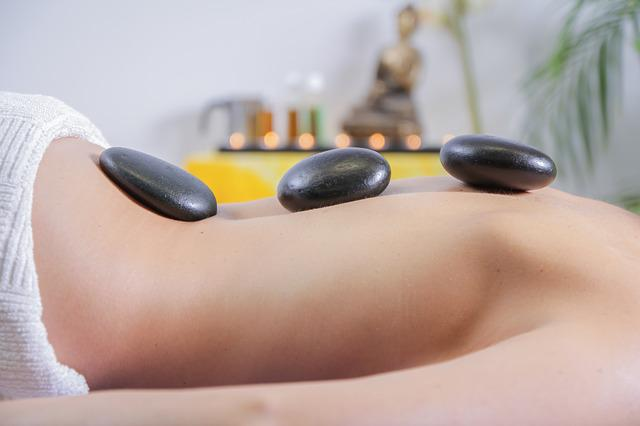
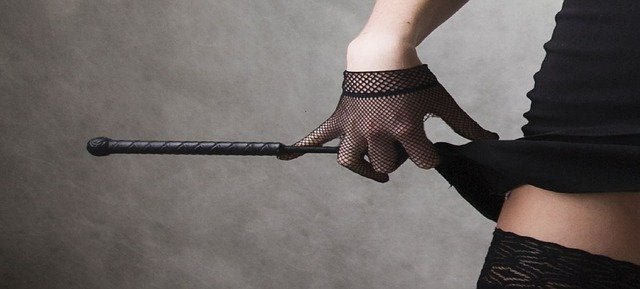
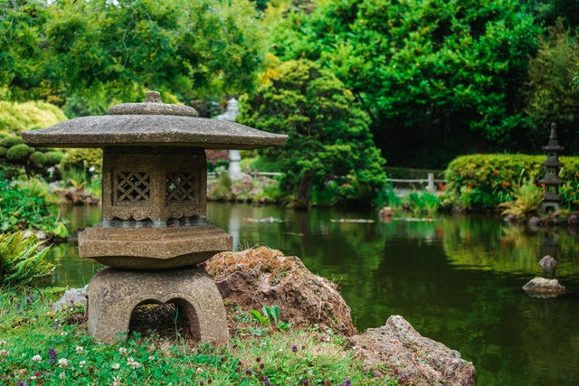

Wir bieten dir die unterschiedlichsten asiatischen Behandlungsmethoden zur Entspannung oder Linderung von körperlichen Leiden, wie: Kopfschmerzen, Übelkeit, Durchblutungsstörungen, Verstopfung, Tinnitus, Schlafstörungen, Knieschmerzen, Rückenschmerzen, Schwindel und allgemeine Stresssymptome.
Gerne beraten wir dich bei Beschwerden, welche Behandlung sich für dich besonders eignet und stellen einen spezifisch auf deine Bedürfnisse angepassten Plan zusammen.
Traditionelle Thaimassage
Die Thai-Massage besteht aus passiven, dem Yoga entnommenen Streckpositionen und Dehnbewegungen, Gelenkmobilisationen und Druckpunktmassagen.
Zehn ausgewählte „Energielinien“, die nach traditioneller Lehre den Körper durchziehen, werden über sanfte Dehnung und mit dem rhythmischen Druck von Handballen, Daumen, Knien, Ellenbogen und Füßen stimuliert, um den Kreislauf und Stoffwechsel anzuregen und Verspanungen zu lösen.
Besonders für Sportler eignet sich diese Behandlung.
Kräuterstempel-Massage
Bei der Kräuterstempel-Massage werden mit heißem Dampf erwärmte Kräutersäckchen auf die Problemzonen gelegt. Die Massage in Verbindung mit der Wärmestrahlung und den Kräutern erzielt dann ihre einzigartige Wirkung.
Je nach Beschwerden werden entspannende oder anregende Kräuter verwendet.
Die Massage wirkt durchblutungsfördernd, entkrampfend, strafft die Haut und versorgt diese mit Nährstoffen.
Wir verwenden zertifizierte Kräuterstempel von höchster Qualität, nach dem Standard des thailändischen Ministry of Public Health (Thailändisches Gesundheitsministerium).
Aromaöl-Massage
Bei der Aromaöl-Massage wird ein wohlriechendes Öl aufgetragen und dann mit speziellen Fingertechniken starke Muskelverspannungen gelöst und der Kreislauf angeregt.
Massage mit heißen Steinen

Bei dieser Behandlung werden warme Lavasteine auf Energieknotenpunkte des Körpers gelegt. Die Wärmestrahlung lässt die Muskulatur entspannen und regt die Blutzirkulation sowie den Lymphfluss an. So werden vitale Energien im Kreislauf freigesetzt und Abfallstoffe sowie Wassereinschlüsse hinaus gespühlt.
Sanft über den Körper bewegt, verleihen die glatten, warmen Steine ein deutliches Wohlgefühl.
Körperfunktionen sowie die physische und psychische Mobilität werden angeregt und manch einer fühlt sich wie neu geboren.
Wir verwenden nur hochwertige Lavasteine mit besonderer Wärme- und Energieleitung.
Exklusive "Kamikaze"-Massage

Unsere einzigartige "Kamikaze"-Massage ist exklusiv für fortgeschrittene Kunden und bietet ein besonders intensives Erlebnis für die Sinne. Angeboten wird dies von unseren Masseurinnen Shoko Tanigawa und Minami Suzuko.
Nähere Einzelheiten erkläre ich dir gerne in einem persönlichen Gespräch.
Entspannungspaket "Lange Rast"

Mit unserem Entspannungspaket "Lange Rast" (Phạkp̄h̀xn Yāw) bieten wir eine ganz besondere Möglichkeit Ruhe und Frieden für Körper und Geist zu finden. Manchmal reicht schon etwas intime Gesellschaft zum reden, sanfte Berührungen und entspannende Getränke und Musik, um wieder zu seelischem Gleichgewicht zu finden. Um Stress abzubauen und das Leben etwas zu entschleunigen ist dieses Paket genau das richtige.
Hinter unserem Haus findest du hierfür einen privaten Garten im Japanischem Stil, der zum Erholen einlädt, egal ob alleine oder in Begleitung. Wir servieren diverse warme und kalte Getränke sowie gesunde asiatische Snacks und Obst.
Dieses Paket kann auch als Erweiterung zu einer anderen Massage hinzugebucht werden.